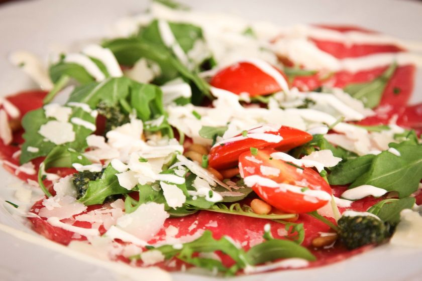
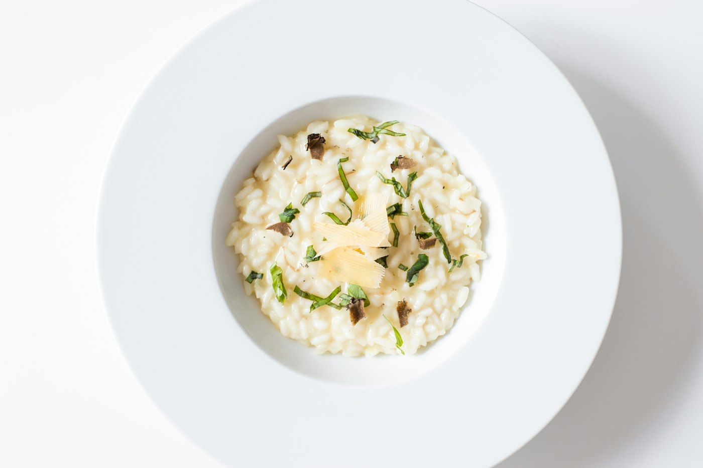

Reserveren
Voor een reservering verzoeken wij u vriendelijk telefonisch contact met ons op te nemen.
Bel 070 387 45 81Ristorante Italiano
Sinds 1976 aan de Herenstraat, in het oude centrum van Voorburg. De traditionele en originele Italiaanse keuken, met Italiaanse gastvrijheid.
Vandaag open vanaf 16:00, keuken van 17:00 tot 22:00

Om heerlijk te genieten van de traditionele en originele Italiaanse keuken, bent u bij Il Pomodoro aan het juiste adres.
Onze keuken biedt een uitgebreide keuze aan authentieke Italiaanse gerechten: van antipasti en pizza tot pasta, salades en secondi piatti. Laat u meeslepen door de mediterrane sfeer, gecombineerd met Italiaanse gastvrijheid, voor een geslaagde avond.
Wij heten u van harte welkom in ons restaurant.

Prijzen in euro. = vegetarisch. Heeft u een allergie? Vertel het ons!




Italiaanse wijnen uit Sicilië, Veneto, Toscane en meer, per glas of per fles.
Terre Verdi Grilloglas 4,25fles 20
Krachtige witte wijn uit Sicilië. Peer en abrikoos, met een vleugje limoen.
Resonata Pinot Grigioglas 4,25fles 20
Licht en soepel, uit de Venezie. Rijpe peer en bloemen, een vleugje citrus in de afdronk.
Campagnola Morando Soavefles 22
Klassieke droge wijn uit Veneto. Exotisch fruit en appel.
Moncaro Le Vele Verdicchio Classicofles 25
Zacht en aromatisch. Volle smaak van groene appel, rode grapefruit en rijpe peer.
Farina Custozafles 26
Fris en fruitig uit Veneto: banaan, ananas en peer, met op de achtergrond vlierbloesem.
Resonata Rosatoglas 4,25fles 20
Licht en fris, uit de wijngaarden van Salento. Rood fruit en een frisse afdronk.
Farina Bardolino Chiarettofles 26
Zacht en droog, uit Veneto. Aardbei, perzik en kersen.
Maschio Proseccoglas 5fles 25
Verfrissend, met fruitige en bloemige aroma's. Helder en elegant van smaak.
Maschio Prosecco Roséglas 5fles 25
Een geur van rozen en violen. Fris en vol, met aardbei en framboos.
Resonata Nero d'Avolaglas 4,25fles 20
Vol en sappig uit Sicilië: braam, zoethout en bosbes, met fluweelzachte tannine.
Resonata Merlotglas 4,25fles 20
Soepel, uit Veneto. Volle, krachtige geur van zwarte en rode bessen.
Epicuro Montepulciano d'Abruzzofles 26
Rond en vol uit Zuid-Italië. Kersen en groene kruiden, mooi in balans.
Farina Bardolino Rossofles 26
Helder, licht, droog en zacht. Wilde rozen en cassis.
Farina Valpolicella Classico Superiorefles 34
Een krachtpatser uit Veneto. Ruig en intens van smaak.
Villa Trasqua Chianti Classicofles 39
Intens robijnrood met een granaatrode tint. Fruitig en delicaat in de neus, soepel en stevig, met een lange afdronk.
Voor een reservering verzoeken wij u vriendelijk telefonisch contact met ons op te nemen.
Bel 070 387 45 81Liever thuis eten? Bestel uw Italiaanse gerechten online via onze bestelsite.
Online eten bestellenHerenstraat 135
2271 CD Voorburg
070 387 45 81
info@ilpomodoro.nl